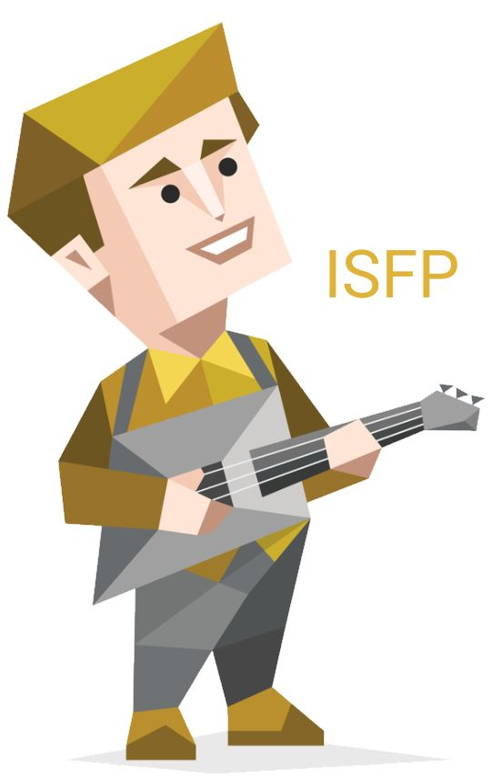

Sobre Mim
Sou um desenvolvedor ISFP-A, o que significa que sou flexível, aventureiro e criativo. Adoro explorar novas tecnologias e buscar soluções inovadoras. Os indivíduos Assertivos são autoconfiantes, equilibrados e resistentes ao estresse. Eles se recusam a se preocupar demais e costumam ser seguros de si ao correr atrás de objetivos.
